在专栏第 36 期《跨平台开发的现状与应用》中，我分享了 H5、React Native/Weex、小程序这几种常见的跨平台开发方式。站在开发的角度，虽然跨平台的开发效率要比 Native 开发更高，但是这并不是大前端在国内盛行的最主要原因。
相比跨平台能力，国内对大前端的动态化能力更加偏执。这是为什么呢？移动互联网已经发展十年了，随着业务成熟和功能的相对稳定，整体重心开始偏向运营，强烈的运营需求对客户端架构和发布模式都提出了更高的要求。如果每个修改都需要经历开发、上线、版本覆盖等漫长的过程，根本无法达到快速响应的要求。
所以 H5、React Native/Weex、小程序在国内的流行，可以说是动态化能力远比跨平台能力重要。那我们应该选择哪一种动态化方式呢？正如我在跨平台开发所说的，目前这几种方案或多或少都还存在一些性能问题，如果一定要使用 Native 开发方式，又有哪些动态化方案？今天我们一起来学习应该如何选择适合自己的动态化方案。
动态化实践的背景
前几天在朋友圈看到说淘宝 iOS 客户端上一个版本的更新，已经是两个多月前的事情了。淘宝作为一个业务异常庞大且复杂的电商平台，这样的发布节奏在过去是很难想象的。
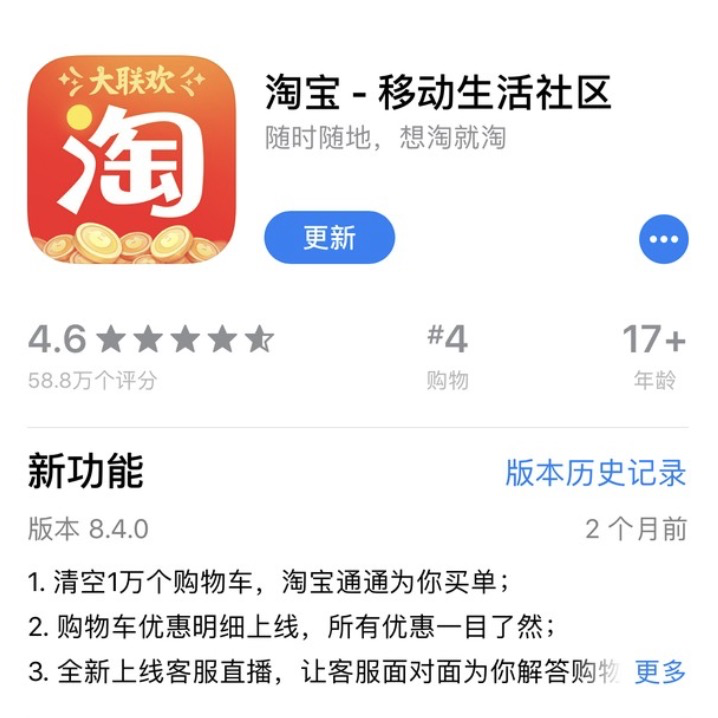
而现在即使不通过发布新版本，我们也能实现各式各样的运营活动和个性化推荐。依赖客户端的动态化能力，我们不需要等待应用商店审核，也无须依赖用户的主动更新，产品在快速迭代的同时，也有着非常强大的试错能力。
1. 常见的动态化方案
移动端动态化方案在最近几年一直是大家关注的重点，虽然它已经发展了很多年，但是每年都会有新的变化，这里我们先来看看各大公司有哪些已知的动态化方案。
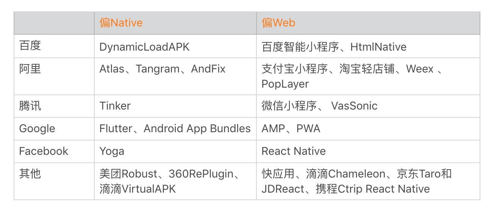
在 2018 年北京 QCon 大会上，美团工程师分享了他们在动态化的实践《美团客户端动态化实践》。美团作为一个强运营的应用，对动态化有非常强烈的诉求，也有着非常丰富的实践经验，他们将动态化方案分为下面四种类型。
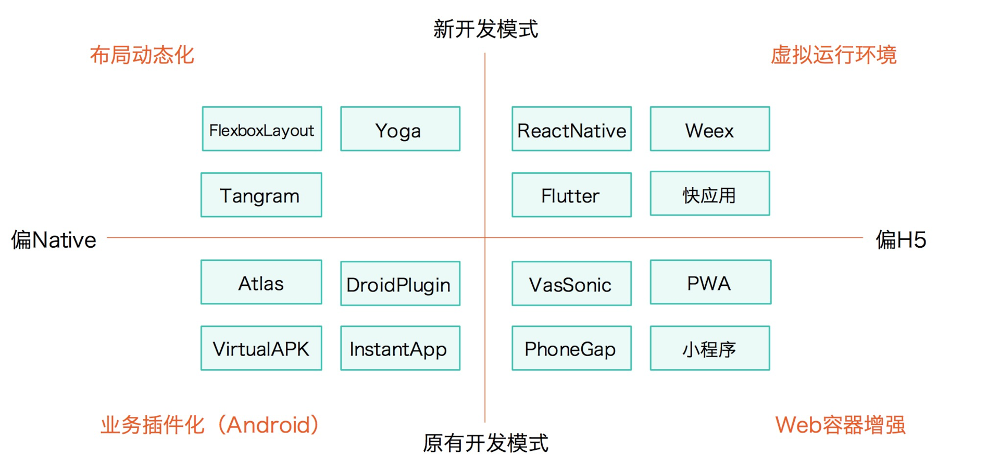
-
Web 容器增强。基于 H5 实现，但是还有离线包等各种优化手段加持，代表方案有 PWA、腾讯的 VasSonic、淘宝的 Zcache 以及大部分的小程序方案。
-
虚拟运行环境。使用独立的虚拟机运行，但最终使用原生控件渲染，代表方案有 React Native、Weex、快应用等。
-
业务插件化。基于 Native 的组件化开发，这种方式在淘宝、支付宝、美团、滴滴、360 等航母应用上十分常见。代表方案有阿里的 Atlas、360 的 RePlugin、滴滴的 VirtualAPK 等。除此之外，我认为各个热修复框架应该也属于业务插件化的一种类型，例如微信的 Tinker、美团的 Robust、阿里的 AndFix。
-
布局动态化。插件化或者热修复虽然可以做到页面布局和数据的动态修改，但是代价巨大，而且也不容易实现个性化运营。为了实现“千人千面”，淘宝和美团的首页结构都可以通过动态配置更新。代表的方案有阿里的 Tangram、Facebook 的 Yoga。
2. 动态化方案的选择
四大动态化方案哪家强，我们又应该如何选择？在回答这个问题之前，我们先来看看它们的差别。
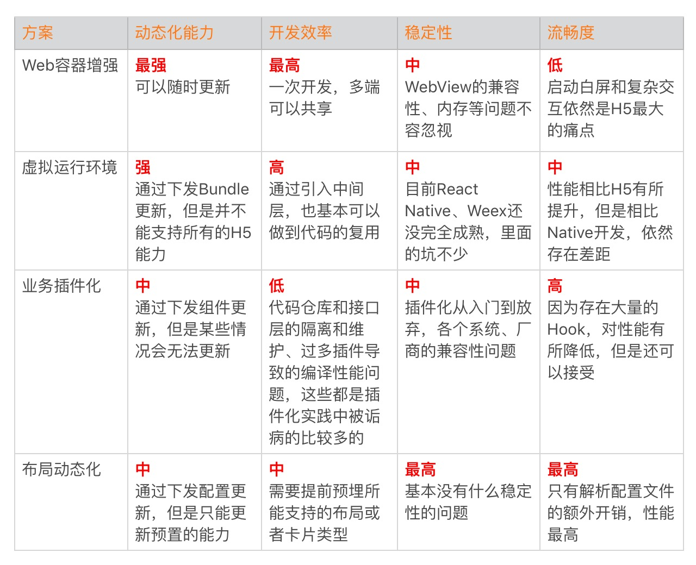
目前我们还无法找到一种“十全十美”的动态化方案，每种方案都有自己的优缺点和对应的使用场景。比如 Web 容器增强方案在动态化能力、开发效率上有着非常大的优势，但在稳定性和流畅度却差强人意。恰恰相反，布局动态化方案在性能上面有非常不错的表现，但是在动态化能力和开发效率上面却受到不少限制。
所以说动态方案的选择，我们需要考虑下面这些因素。
-
业务类型。主要考虑业务的重要性、交互是否复杂、对性能的要求、是否长期迭代等因素。
-
团队技术栈和代码的历史包袱。在选择方案的时候，也需要结合团队的技术栈现状以及代码的历史包袱综合考虑。以微信为例，作为一个强交互的 IM 应用，团队基本以 Native 开发为主，而且微信基本没有太多运营上的需求，所以当时在动态化方案上只使用了 Tinker。当然团队的技术栈并不是永恒不变，有了微信小程序之后，内部的一些业务也尝试使用小程序来改造。
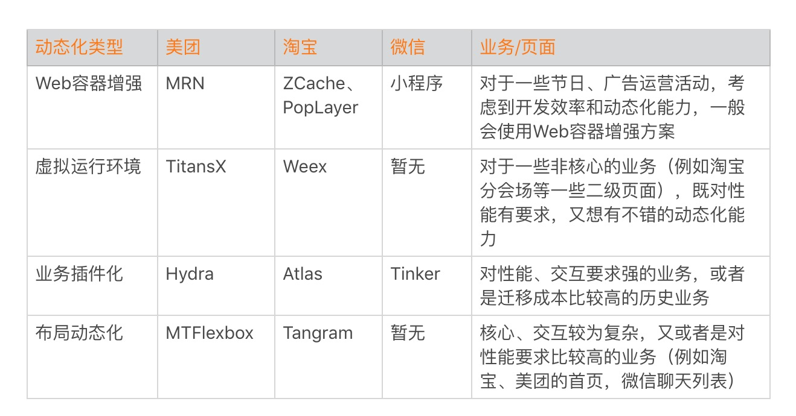
最终无论我们选择哪种动态化类型，我都建议公司内部同一种动态化类型都使用同一个方案，这样在统一技术栈的同时，也可以实现代码在不同业务之间的迁移。比如阿里内部的虚拟运行环境统一使用 Weex，一个业务在手淘的效果不错，也可以快速迁移到飞猪、天猫等其他应用中，实现应用的流量矩阵。
同样对于运营活动也是如此，阿里内部有一个叫PopLayer的组件，它可以在任意 Native 页面（这个页面甚至可以是 Browser）弹出 H5 的部署容器，可以在无需发版的情况下对已有的 Native 界面上浮出透明浮层，并且可以不影响 Native 页面本身的交互。这样做活动我们不需要在客户端提前一两个月开发代码，而且同一个活动也可以快速在公司内部的各个应用中上线。
Native 动态化方案
Web 容器增强和虚拟运行环境方案通过独立的 Runtime 和 JS-SDK 来桥接 Native 模块，而业务插件化则通过插件化框架和接口能力直接调用。相比之下前者更加抽象而不易造成代码混乱，这也是目前各大公司逐渐开始“去插件化”的原因。
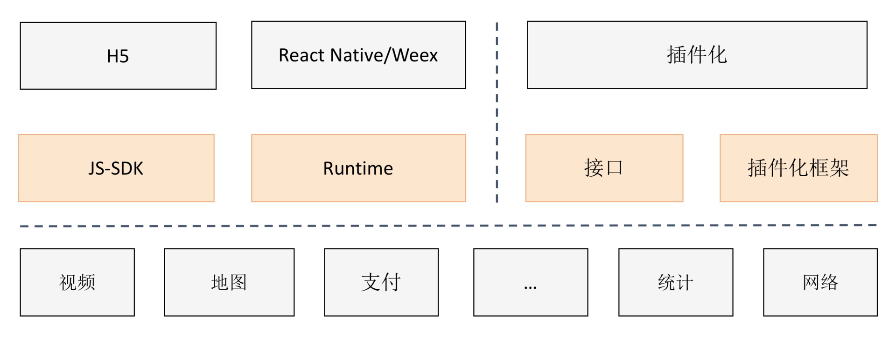
最近两年，大前端开发越演越烈，传统的 Native 动态化方案是否还存在价值，它又该何去何从？热修复、插件化这些方案的未来又将如何演进？
1. 热修复和插件化
2016 年在开源 Tinker 的时候有两件事情是超出我预料的，一个是热修复在国内竟然有那么大的反响，另外一个就是它竟然如此的“坑坑不息”。
从《Tinker：技术的初心与坚持》一文中，你可以看到过去我们踩过的一小部分坑，但非常不幸的是，填坑之路至今依然没有结束。每次 Android 新版本发布，我们就像迎来期末考试一样步步惊心。
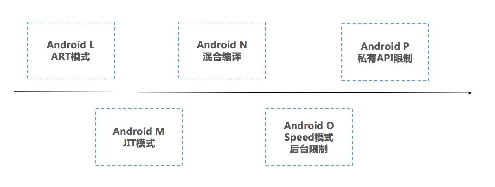
曾经微信希望使用 Tinker 来代替版本发布，在热修复的基础上实现四大组件的代理。但是 Android P 私有 API 限制的出现，基本打消了这个念头。热修复不能代替版本发布，但是我们可以通过它来实现一些应用商店不支持的功能，例如精准的灰度人数控制、渠道和用户属性选择、整包的 A/B 测试等。
另一方面，热修复给国内的 Android 生态也带来一些不太好的影响，比如增加用户 ROM 体积占用、App 启动变慢 15%、OTA 首次卡顿等。特别是 Android Q 之后，动态加载的 Dex 都只使用解释模式执行，会加剧对启动性能的影响。因为性能的问题，目前大公司基本暂停了全量用户的热修复，只使用热修复用于灰度和测试。
热修复如此，插件化也是如此。笨重的插件化框架不仅影响应用的启动速度，而且多团队协作的时候并没有想象的那么和谐，接口混乱、仓库不好管理、编译速度慢这些问题都会存在。插件化回归模块化和组件化，这也是目前各大公司都在逐步推进的事情。
前一阵子，徐川在《移动开发的罗曼蒂克消亡史 》一文中回顾了热修复和插件化的前世今生。时间一转三年过去了，对于曾经参与这个浪潮的一份子来说，我可以做的只是顺应潮流的变化。
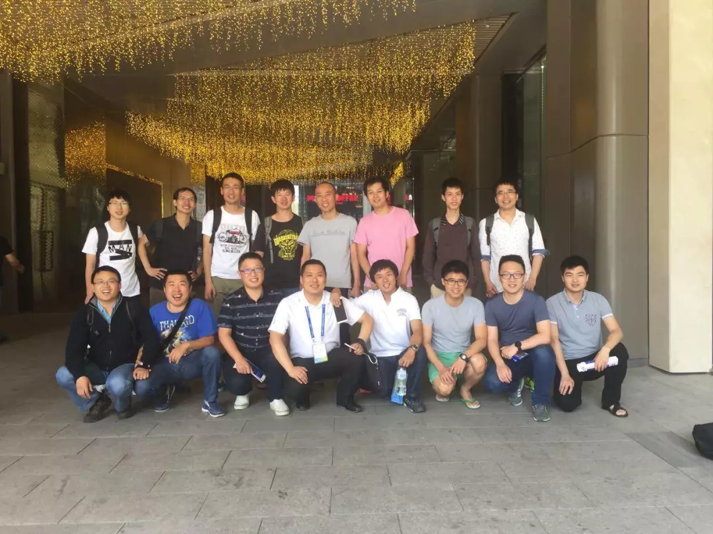
热修复的未来
Tinker 设计之初参考了 Instant Run 的编译方案，但是正如专栏第 26 期《关于编译，你需要了解什么？》中所说的，Google 在 Android Studio 3.5 之后，对于 Android 8.0 以上的设备将会使用Apply Changes替代之前的 Instant Run 方案。
Apply Changes 不再使用插入 PathClassloader 的方式，而是使用我们已经多次讨论过的 JVM TI。在 Android 8.0 之后，JVM TI 开始逐渐支持 ClassTransform 和 ClassRedefine 这两个接口，它们可以允许虚拟机在运行时动态修改类，实现运行时的动态字节码编织。事实上这个技术在 JVM 就已经非常成熟，Java 服务端利用这两个接口实现了类似热部署、远程调试、动态追踪等能力，具体你可以参考《Java 动态追踪技术探究》。
那热修复的未来将要走向何方？本来我对热修复的未来是非常悲观的，但是 Android Q 给了我们一个很大的惊喜。我们知道，Android P 在中国有非常多的应用出现了兼容性问题，其中大部分是热修复、插件化以及加固等原因造成的（Google 提供的数据是 43% 的兼容性问题由这三个问题造成）。
为了解决这个问题，并且减少我们对私有 API 的调用，Google 在 Android P 新增了AppComponentFactory API，并且在 Android Q 增加了替换 Classloader 的接口 instantiateClassloader。在 Android Q 以后，我们才可以实现在运行时替换已经存在 ClassLoader 和四大组件。中国热修复的先驱们用自己的“牺牲”，总算换来了 Google 官方的支持。我们使用 Google 官方 API 就可以实现热修复，这样以后 Android 版本再升级也不用担惊受怕了。移动开发的罗曼蒂克并没有消亡，Native 的热修复再次迎来了春天。
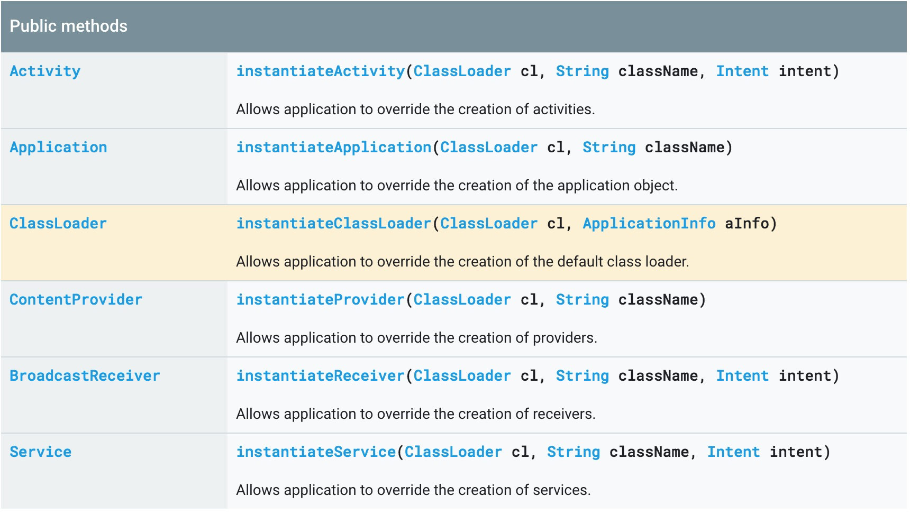
插件化的未来
对于插件化的未来，我们需要思考如何“回归官道”。Google 在 2018 年推出了Android App Bundles，它可以实现模块的动态下载，但是与插件化不同的是，它并不支持四大组件代理的能力。
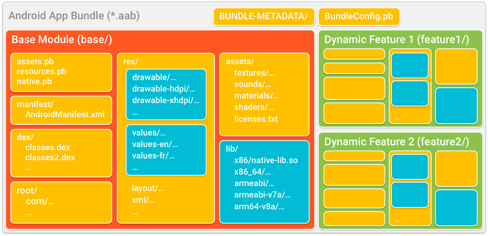
但是 Android App Bundles 方案依赖 Play Service，在国内我们根本无法使用。爱奇艺的Qigsaw可能对我们有所启发，它基于 Android App Bundles 实现（支持动态更新，但是不支持四大组件代理），同时完全仿照 AAB 提供的 Play Core Library 接口加载插件，如果有国际化需求的公司可以在国内版和国际版上无缝切换。这种方案不仅可以使用 Google 提供的编译工具链，也支持国际国内双轨，相当于 Google 为我们维护整个组件化框架，在国内只需要实现自己的“Play Service”即可。
当然和热修复一样，如果使用AppComponentFactory API，我们也可以实现插件化的四大组件代理。但是具体实现上依然需要在 AndroidManifest 中预先注册四大组件，然后具体的替换规则可以在我们自定义的 AppComponentFactory 实现类中埋好。
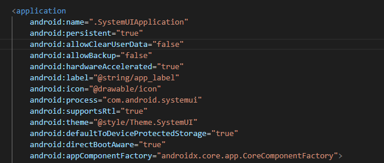
以 Activity 替换为例，我们可以将某些类名的 Activity 替换成其他的 Activity，新的 Activity 可以在补丁中，也可以在其他插件中。
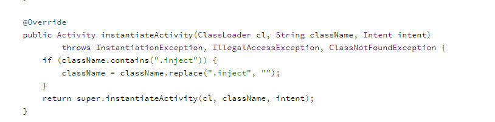
热修复和插件化作为 Native 动态化方案，它们有一定的局限性。随着移动技术的发展，部分功能可能会被替换成小程序等其他动态化方案。但是从目前来看，它们依然有非常大的存在价值和使用场景。
2. 布局动态化
正如上文所说，像淘宝、美团首页这些场景，我们对性能要求非常高，这里只能使用 Native 实现。但是首页也是流量的聚集地，“提增长、提留存、提转化”都要求我们有强大的运营能力。最近两年，淘宝、天猫一直推行“千人千面”，每个用户看到的主页布局、内容可能都不太一样。
布局动态化正是在这个背景之下应运而生，在我看来，布局动态化需要具备下面三个能力。
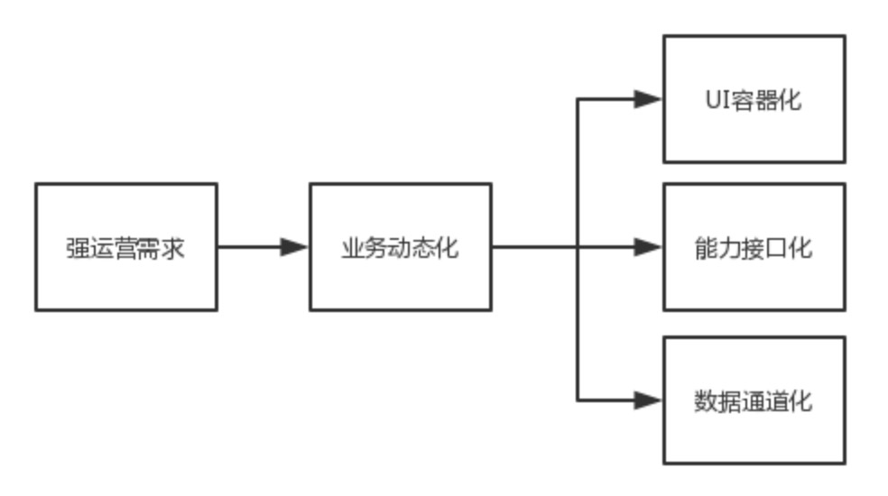
-
UI 容器化。能够动态地新增、调整 UI 界面而无需发版。
-
能力接口化。点击、跳转等通用能力可以通过路由协议对外提供，满足 UI 容器化后的调用需求。
-
数据通道化。数据上报也可以通过字段配置，实现客户端根据配置自动上报。
在具体的实践上，天猫开源的Tangram是一个不错的选择。但是 Tangram 的整体方案会相对复杂一些，我们也可以基于底层的VirtualView做二次开发。
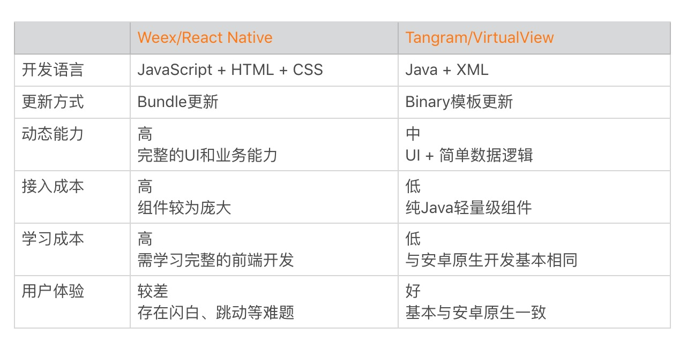
总的来说，布局动态化相比虚拟运行环境来说，它不仅实现了 UI 的动态新增和修改，也有着良好的体验和性能，同时接入和学习成本也比较低。
总结
“路漫漫其修远兮，吾将上下而求索”，我们对动态化实践的探索一直没有停止。今年，Flutter 也强势地杀入了这个“战场”，那 Flutter 在跨平台和动态化方面的表现如何，我们将在专栏下一期中揭晓。
动态化如今在国内是炙手可热的研究方向，虽然每个公司都强行造了自己的轮子，但是动态化方案目前还有很多没有解决的问题。所以在我们解决这些问题的过程中，也还会不断演变出其他的各种新方案。
总的来说，各种类型的动态化方案，目前都能找到自己的应用场景。移动技术在快速的发展，我们无法准确预料到未来，比如说在 Android P 我们正准备放弃热修复的时候，Android Q 又使它重新焕发了青春。但是我们坚信，无论未来采用何种方案，都是为了给用户更好的体验，同时让业务可以更快的迭代，并在不断的尝试中，给用户提供更好的产品。
课后作业
对于动态化实践，你有什么看法？在你的应用中，使用了哪种动态化方式？欢迎留言跟我和其他同学一起讨论。
跨平台和动态化可以说是大前端时代最大的两个特点，也是每年技术大会的重点。今天的课后作业是仔细阅读下面大会的分享内容，学习各大公司对大前端的实践经验，并留言写写你的心得体会。
-
2018 年北京 QCon：美团《美团客户端动态化实践》。
-
2018 年 GMTC：闲鱼《基于 Google+Flutter 的移动端跨平台应用实践》。
-
2018 年 GMTC：京东《当插件化遇上 Android+P》。
-
2018 年 GMTC：小米《快应用开发与实现指南》。
-
2018 年 GMTC：绿色守护《Android+ 研发的昨天、今天与明天》。
COMMUNITY NOTES
读者评论
目前我扩宽使用的是插件化技术，这个是根据我们目前项目定制的，我们存在部门协同比较多，而且，很多部门都有成品的APP，最重要的是，我们目前没有IOS端，那么我们想快速集合各个部门的功能，使用插件化最适合不过，对现有的APP进行改造，打包出来APK，直接在我们的宿主上运行。我们也尝试过atlas这样的技术，但是对我来说，atlas是真的重，一般的项目真的慎重考虑使用。这里我觉得所有的项目都适合插件化，Android优化中有一个指标就是APK大小，如果你插件化用的好，你主APK可以小到怕人，插件化还有个好处就是一切基于原生，在铺开内部推广的时候，可以得到公司内部Android开发人员的快速响应，帮助你扩大影响力，实现业务能力爆炸式上升。RN、Weex这类技术在移动端上面我一直觉得是比较坑的东西，但是我很喜欢，因为他们也是一种很好的方式，但是我说他坑就是因为他其实在不同平台上适配起来是很麻烦的，但是话又说回来，如果你有机会去研究并能落实的话，那肯定是很好的，因为能学习到Android与IOS上RN的适配技巧，这些其实是更加宝贵的经验，与此同时，如果你有这样的经验，现在flutter这么火，你一定能快速上手，因为其实任何跨平台的开发技术，都离不开系统兼容适配的，因为系统是真的不一样，下面跑的东西不一样，你说要不要适配？现在个人是比较推荐flutter，因为同样是跨平台方案，flutter相比RN下，flutter要做的适配问题肯定是比RN要少的，因为flutter使用的是另外的渲染流程。通过个人经验，不管是插件化、动态组件化、RN Weex、flutter，千万别给弄的头昏眼花，这些技术我们其实都在实践，也就是说，没有对比就没有最好的方案，只有你自己去对比过了，才能更好的结合你的项目进行更好的定制与改进，好的架构是演进来的，别忘了。都要学？是的，我认为一个合格的Android移动开发者，你都要懂，那有这么多时间？这里就要说一下，其实他们有很多的共性，只要你搞通一个，比如插件化你搞通了，atlas、滴滴VirtualApk、360Replugin等等这类都是差不多的，RN你弄通了，Weex肯定也不难，flutter也一样，虽然他们面向的开发框架不一样，甚至语言不一样，但是牛逼的你慢慢会发现，语言、上层封装框架，其实都不是什么大问题。最后感谢作者的分享，学习中。